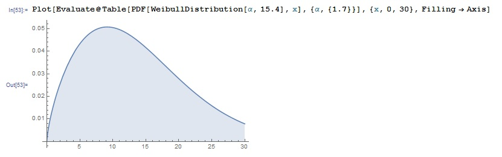

Sannsynlighetsfordeling, kumulativ fordeling, forventning, varians
Weibull-fordeling Definisjon: Sannsynlighetsfordeling f(x)=Weib(λ, k)
Beregning
I Mathematica er k=α og λ=β
1. Skriv som innput
In[1]:= PDF[WeibullDistribution[ α, β], x]
Out[1]=
In[2]:= PDF[WeibullDistribution[α-verdi, β-verdi], x-verdi]
Eksempel:
3. Du kan tegne funksjonen og velge definert en eller flere alfa-, beta- og x-verdier.
In[4]:=Plot[Evaluate@ Table[PDF[WeibullDistribution[α eller α-verdi, β eller β-verdi], x], {α, {α-verdi eller verdier}} eller {β, {β-verdi eller verdier}}], {x, fra 0 til ∞}, Filling -> Axis]
Eksempel:

Eksempel med flere verdier:
for {α1=0.5,α2=2, α3=4}, β=2, x1=0, x2=5 og for α=2, {β1=1, β2=2, β3=4}, x1=0, x2=5
Definisjon: Kumulativ sannsynlighet
Beregning i Mathematica:1. Skriv som innput
In[1]:= CDF[WeibullDistribution[ α, β], x]
Out[1]=
In[2]:= CDF[WeibullDistribution[α-verdi, β-verdi], x-verdi]
Eksempel:
3. Plot grafen med en eller flere α- β- og x-verdier
In[4]:=Plot[Evaluate@ Table[CDF[WeibullDistribution[α eller α-verdi, β eller β-verdi], x], {α, {α-verdi eller verdier}} eller {β, {β-verdi eller verdier}}], {x, fra 0 til ∞}, Filling -> Axis]
Eksempel:
for {α1=0.5,α2=2, α3=4}, β=2, x1=0, x2=5 og for α=2, {β1=1, β2=2, β3=4}, x1=0, x2=5
Forventing (mean):
Definisjon:
Beregning i Mathematica:
1. In[1]:= Mean[WeibullDistribution[α, β]]
2. Spesifiser verdiene
In[2]:= Mean[WeibullDistribution[α-verdi, β-verdi]]
Eksempel: Varians (variance):
Definisjon:
Innput:
1. In[1]:= Variance[WeibullDistribution[α, β]]
2. Spesifiser verdiene
In[2]:= Variance[WeibullDistribution[α-verdi, β-verdi]]
Eksempel: